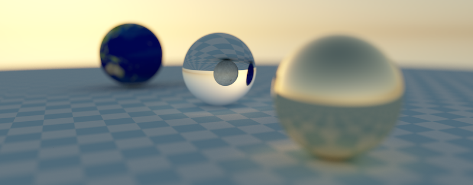

Books, articles, and blog posts tout the wavefront renderer architecture as a way to improve ray tracing performance on GPUs. How well does it perform in practice on M1, M2, and M3 chips? Should you write a wavefront renderer for your hobby project?
Pathtracing tidbits: integrating animated blue noise

The method from the paper Using Blue Noise for Ray Traced Soft Shadows can be readily adapted to a path tracer to yield images with better clarity than white noise.
Embed data into C byte arrays at build time
Set up a build workflow to effortlessly embed data into your executable at build time.
A quick look at Apple Silicon's hardware accelerated ray tracing performance

A simple test case measures how much of a boost can be obtained with hardware accelerated raytracing on Apple Silicon.
Notes on C++ initialization
A summary of the notes that I took to avoid shooting myself in the foot using C++ designated initializers and STL constructors.
GPU Pathtracer Devlog

A devlog of my GPU pathtracer project, where I am writing a physically based pathtracer from scratch using WebGPU.
Weekend raytracing with wgpu, part 2

This post focuses on making the raytracer discussed in part 1 much shinier. Notes on integrating a physically based sky model and textured material support are discussed next.
Weekend raytracing with wgpu, part 1
A look at the most notable challenges in implementing Peter Shirley's Raytracing In One Weekend using wgpu and WGSL.
Using inverse transform sampling to generate random numbers in a given distribution
In inverse transform sampling, the inverse cumulative distribution function is used to generate random numbers in a given distribution. But why does this work? And how can you use it to generate random numbers in a given distribution by drawing random numbers from any arbitrary distribution?